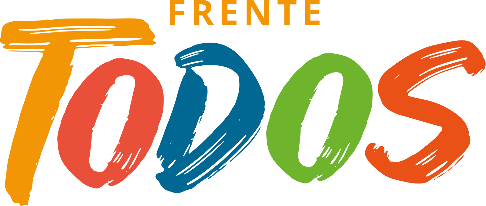

<ion-header>
  <ion-navbar>
    <button ion-button menuToggle>
      <ion-icon name="menu"></ion-icon>
    </button>
    <ion-title></ion-title>
  </ion-navbar>
</ion-header>

<ion-content padding>
  <!-- {{ celular }} -->
  <!--  -->
  <br>
  

  <!-- <h3>TITULO EJEMPLO</h3>

  <p>Texto dentro de un parrafo, esto se utiliza para textos largos que nadie nunca lee</p> -->
  <!-- <button ion-button secondary menuToggle>Toggle Menu</button>

  <button ion-button (click)="logout()">Cerrar Sesión</button> -->

  <ion-card (click)="goAvales()">
    <ion-card-header class="color-azul">
      <br>
      Consulta para Avales
    </ion-card-header>
    <ion-card-content>
      <br>
      <p>Consultá el padrón provisorio y de afiliados</p>
    </ion-card-content>
  </ion-card>
  <br>
  <!-- <ion-card>
    <ion-card-header>
      Consultar Padrón electoral
    </ion-card-header>
    <ion-card-content>
      <br>
      <p>Consultá el padrón provisorio y de afiliados y cargá los avales que hayas registrado.</p>
    </ion-card-content>
  </ion-card> -->
</ion-content>